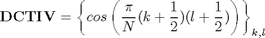
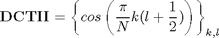
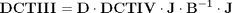
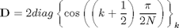
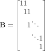
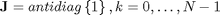
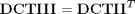
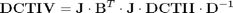

Calculation of DCT_IV using DCT_II (alternative)
Contents
Definitions
Result of transform is y=x*T, where y, x are row-vectors T is transform matrix
DCT_IV matrix definition

N=8; DCT4=cos(pi/N*[(0:N-1)+1/2]'*[(0:N-1)+1/2])
DCT4 =
0.9952 0.9569 0.8819 0.7730 0.6344 0.4714 0.2903 0.0980
0.9569 0.6344 0.0980 -0.4714 -0.8819 -0.9952 -0.7730 -0.2903
0.8819 0.0980 -0.7730 -0.9569 -0.2903 0.6344 0.9952 0.4714
0.7730 -0.4714 -0.9569 0.0980 0.9952 0.2903 -0.8819 -0.6344
0.6344 -0.8819 -0.2903 0.9952 -0.0980 -0.9569 0.4714 0.7730
0.4714 -0.9952 0.6344 0.2903 -0.9569 0.7730 0.0980 -0.8819
0.2903 -0.7730 0.9952 -0.8819 0.4714 0.0980 -0.6344 0.9569
0.0980 -0.2903 0.4714 -0.6344 0.7730 -0.8819 0.9569 -0.9952
DCT_II matrix definition

DCT2=cos(pi/N*(0:N-1)'*((0:N-1)+1/2))
DCT2 =
1.0000 1.0000 1.0000 1.0000 1.0000 1.0000 1.0000 1.0000
0.9808 0.8315 0.5556 0.1951 -0.1951 -0.5556 -0.8315 -0.9808
0.9239 0.3827 -0.3827 -0.9239 -0.9239 -0.3827 0.3827 0.9239
0.8315 -0.1951 -0.9808 -0.5556 0.5556 0.9808 0.1951 -0.8315
0.7071 -0.7071 -0.7071 0.7071 0.7071 -0.7071 -0.7071 0.7071
0.5556 -0.9808 0.1951 0.8315 -0.8315 -0.1951 0.9808 -0.5556
0.3827 -0.9239 0.9239 -0.3827 -0.3827 0.9239 -0.9239 0.3827
0.1951 -0.5556 0.8315 -0.9808 0.9808 -0.8315 0.5556 -0.1951
Finding relations
We will base our derivation on already existing relations between DCT_IV and DCT_III transforms

where



Applying relation between DCT_III and DCT_II matrix

we will get
B=diag(ones(1,N))+diag(ones(1,N-1),1);
D=2*diag(cos(pi/2/N*((0:N-1)+1/2)));
% K=diag((-1).^(0:N-1));
J=rot90(eye(N));
Check expression of DCT_II through DCT_IV
Check DCTIII matrix
J*inv(B')*J*DCT4*D
ans =
1.0000 1.0000 1.0000 1.0000 1.0000 1.0000 1.0000 1.0000
0.9808 0.8315 0.5556 0.1951 -0.1951 -0.5556 -0.8315 -0.9808
0.9239 0.3827 -0.3827 -0.9239 -0.9239 -0.3827 0.3827 0.9239
0.8315 -0.1951 -0.9808 -0.5556 0.5556 0.9808 0.1951 -0.8315
0.7071 -0.7071 -0.7071 0.7071 0.7071 -0.7071 -0.7071 0.7071
0.5556 -0.9808 0.1951 0.8315 -0.8315 -0.1951 0.9808 -0.5556
0.3827 -0.9239 0.9239 -0.3827 -0.3827 0.9239 -0.9239 0.3827
0.1951 -0.5556 0.8315 -0.9808 0.9808 -0.8315 0.5556 -0.1951
Check computation of DCTII transform
x=randn(1,N) y=x*DCT2 % true result y1=x*J*inv(B')*J*DCT4*D % compute DCTII using DCTIV transform
x = -2.1707 -0.0592 -1.0106 0.6145 0.5077 1.6924 0.5913 -0.6436 y = -1.2515 -4.9342 -2.4372 0.5813 -2.7897 -0.7562 -1.9913 -3.7866 y1 = -1.2515 -4.9342 -2.4372 0.5813 -2.7897 -0.7562 -1.9913 -3.7866
Check expression of DCT_IV through DCT_II

J*B'*J*DCT2*inv(D)
ans =
0.9952 0.9569 0.8819 0.7730 0.6344 0.4714 0.2903 0.0980
0.9569 0.6344 0.0980 -0.4714 -0.8819 -0.9952 -0.7730 -0.2903
0.8819 0.0980 -0.7730 -0.9569 -0.2903 0.6344 0.9952 0.4714
0.7730 -0.4714 -0.9569 0.0980 0.9952 0.2903 -0.8819 -0.6344
0.6344 -0.8819 -0.2903 0.9952 -0.0980 -0.9569 0.4714 0.7730
0.4714 -0.9952 0.6344 0.2903 -0.9569 0.7730 0.0980 -0.8819
0.2903 -0.7730 0.9952 -0.8819 0.4714 0.0980 -0.6344 0.9569
0.0980 -0.2903 0.4714 -0.6344 0.7730 -0.8819 0.9569 -0.9952
Check computation of DCTIV transform
y=x*DCT4 % true result y1=x*J*B'*J*DCT2*inv(D) % compute DCTIV using DCTII transform
y = -1.4047 -4.9058 -0.5156 0.2607 -2.3081 0.0208 -2.7178 -0.9556 y1 = -1.4047 -4.9058 -0.5156 0.2607 -2.3081 0.0208 -2.7178 -0.9556
Reference
[1] Markus Pueschel, Jose M.F. Moura. The Algebraic Approach to the Discrete Cosine and Sine Transforms and their Fast Algorithms SIAM Journal of Computing 2003, Vol. 32, No. 5, pp. 1280-1316.